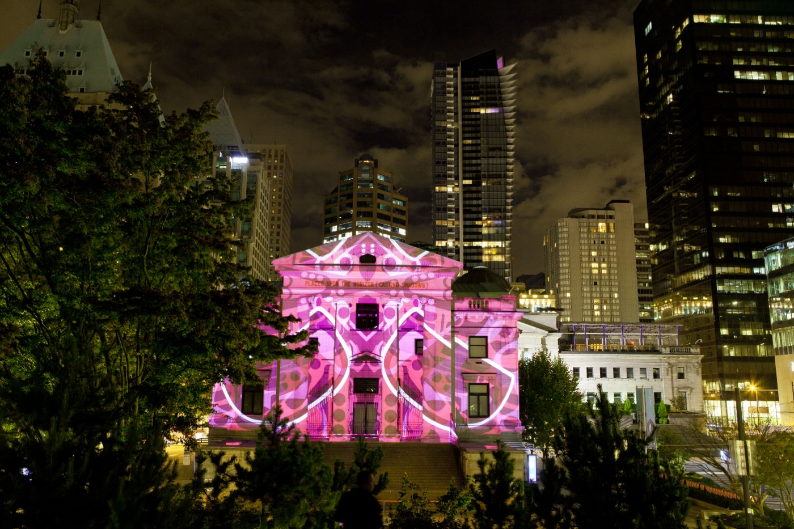
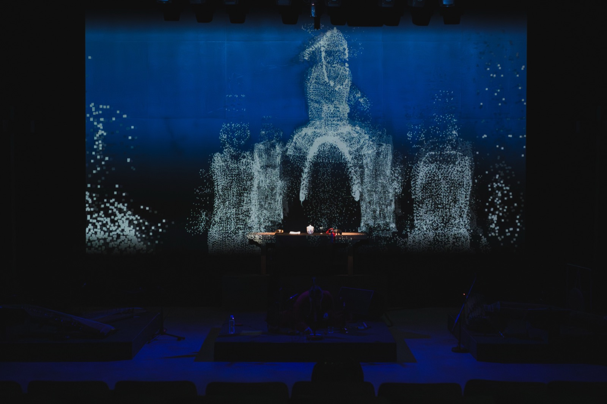
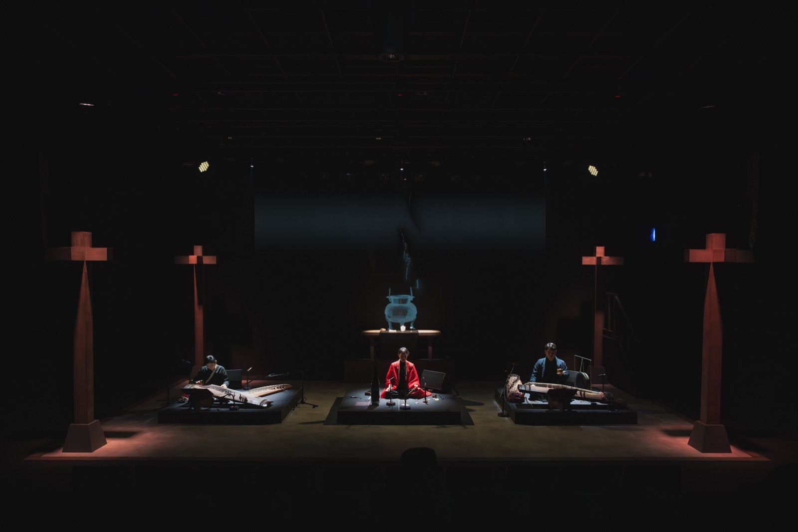
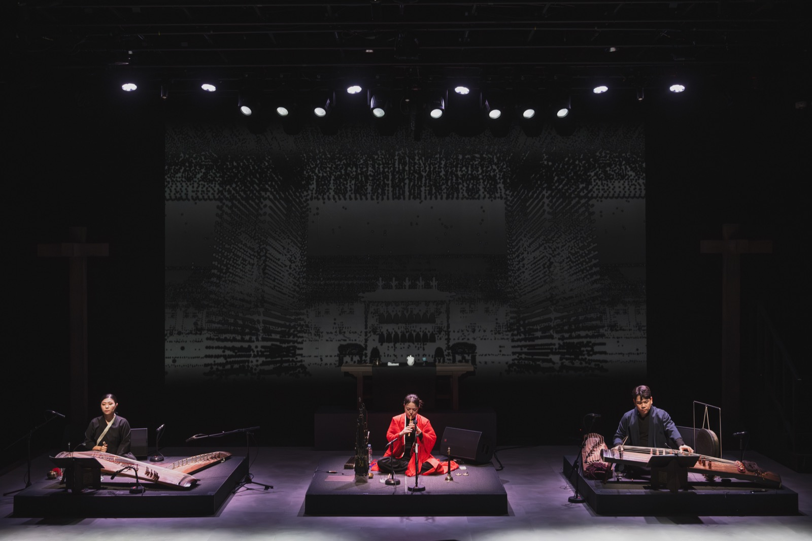
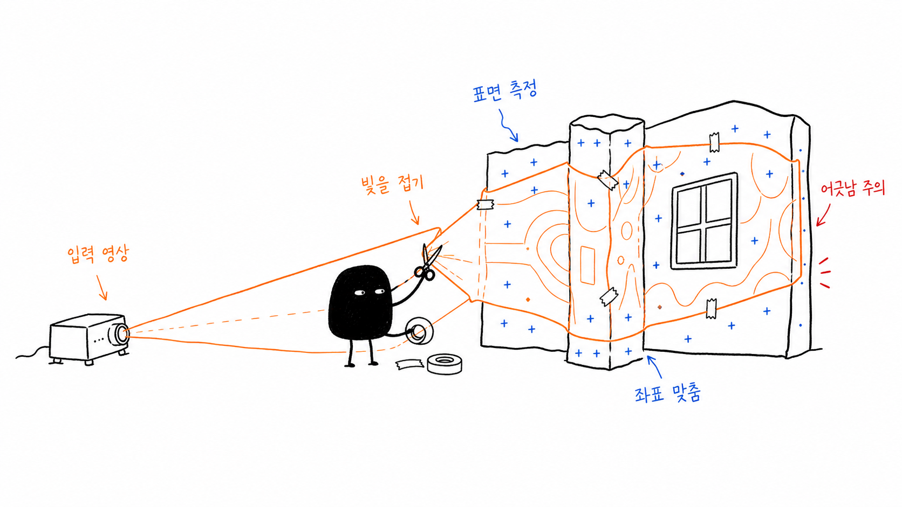
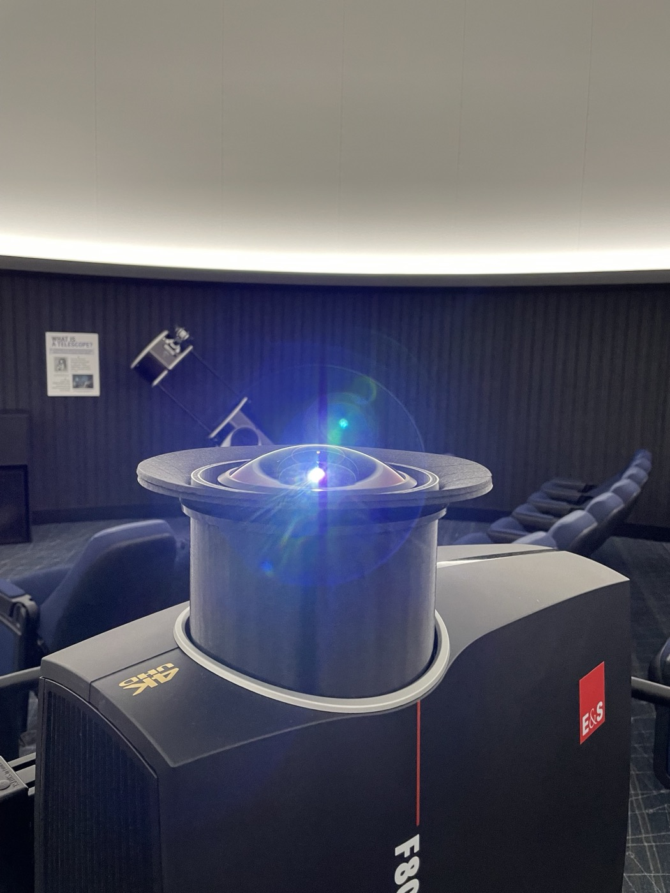
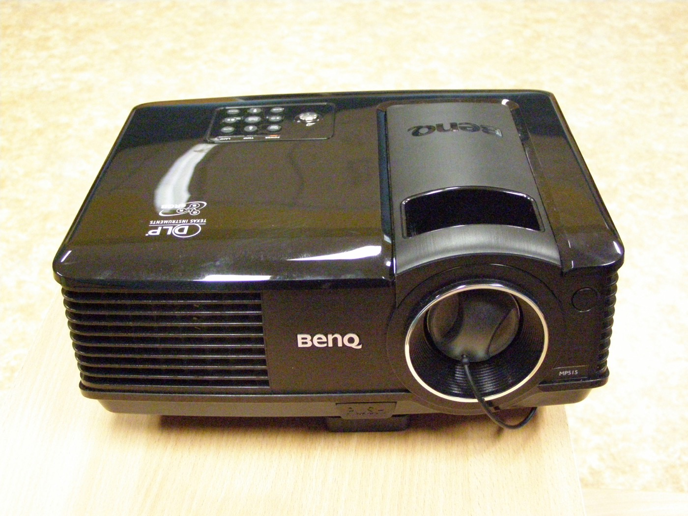
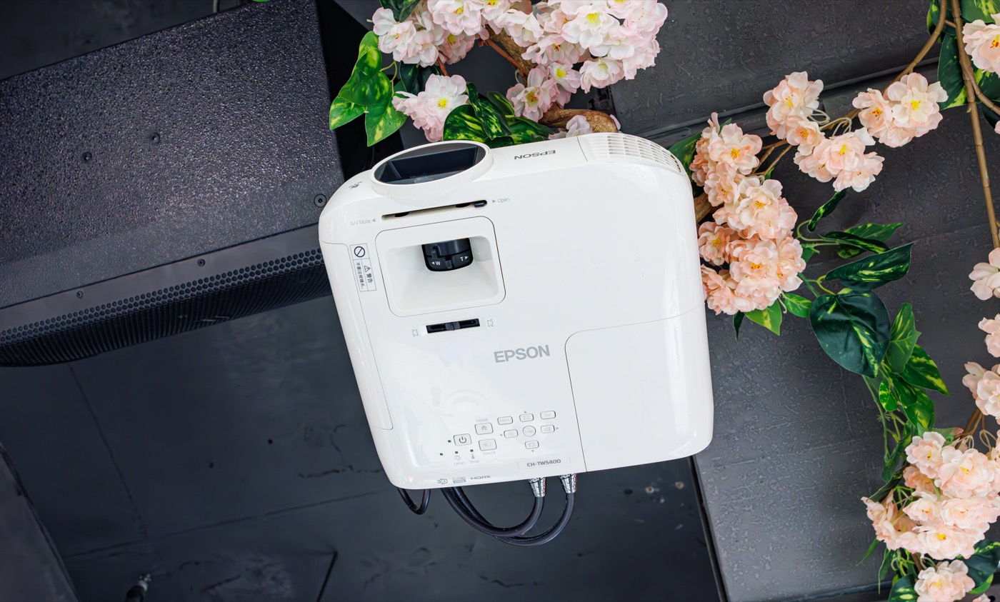
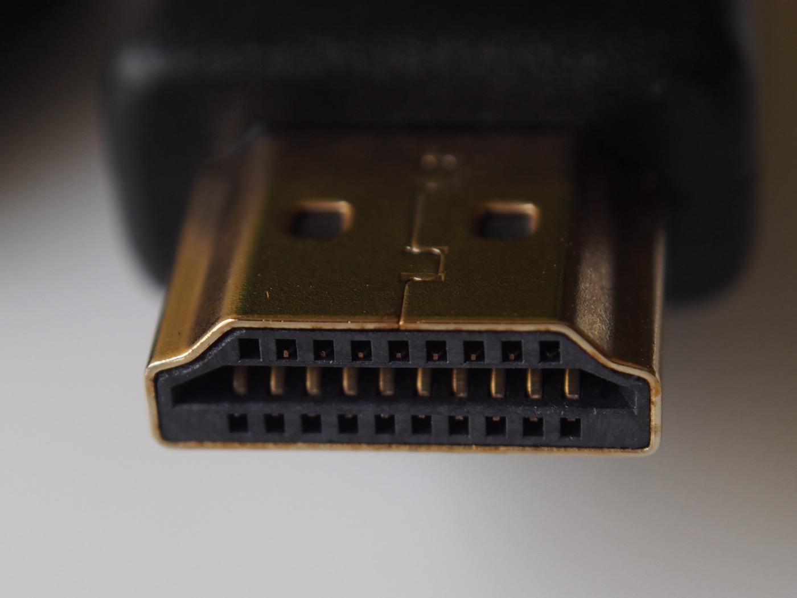
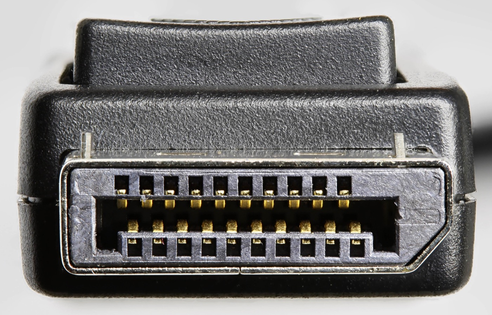

빛으로 공간의 표면을 다시 그리는 일. 12주의 첫 시간을 연다.
미디어와 기술로 무대와 전시를 만든다. 실시간 영상, 프로젝션 맵핑, 인터랙티브 설치를 다룬다.
기술개발팀장
테크니컬 디렉터
무용원 · 영상원 강사
노드로 영상을 만드는 도구의 인터페이스와 기본기를 익힌다.
실제 공간과 사물의 표면에 영상을 맞춰 투사한다.
센서와 오디오에 반응하는 작업으로 확장한다.
전시와 무대에서 만든 작업들을 먼저 본다.
무대 배경에 점으로 흩어진 형상을 투사한 공연. 영상이 무대의 한 요소로 호흡한다.



무엇이고, 무엇으로 만드는가.
평면 스크린이 아니라 실제 공간의 표면 — 건물, 사물, 신체 — 에 영상을 정확히 맞춰 투사하는 기법이다.
대상의 형태를 측정하고, 영상의 좌표를 그 형태에 맞게 변형해 빛으로 덧입힌다.


레이저를 광원으로 쓴다. 밝고 수명이 길며, 켜자마자 최대 밝기에 도달한다. 대형·상설 전시에 적합하다.

미세한 거울 칩이 빛을 반사해 화면을 만든다. 명암비가 높고 잔상이 적어 빠른 영상에 강하다.

액정 패널을 통과한 빛으로 화면을 만든다. 색이 풍부하고 가격이 합리적이라 보급형에 흔하다.

영상과 음성을 한 케이블로 전송하는 가장 보편적인 규격.

고해상도·고주사율에 강하다. 여러 디스플레이 연결에 유리하다.
송신기와 수신기로 케이블 없이 영상을 보낸다. 프로젝터가 닿기 어려운 위치에 둘 때 쓴다.
노드를 연결해 실시간 영상을 만드는 비주얼 프로그래밍 도구. 이 수업의 중심 도구다.
영상·센서·오디오를 입력으로 받아 그 자리에서 처리하고, 프로젝터로 내보낸다.
표면이 달라지면 맵핑도 달라진다. 네 가지 방식을 본다.
각자 작업과 일상에서 AI를 어떻게 활용하는지 이야기한다.
이미지·영상·3D 생성이 창작 과정에 어떻게 들어오는지 살핀다.